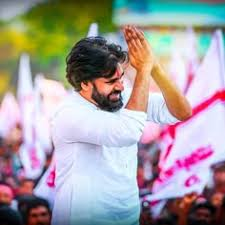
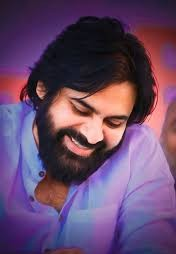
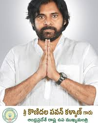
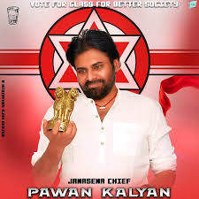

As an actor, Kalyan is known for his distinctive style and mannerisms in Telugu cinema. He enjoys a huge fanbase across the Telugu states, often described as "unfathomable," "fiercely loyal," and akin to a "cult following."[12] He is among the highest-paid actors in Indian cinema and has been featured in Forbes India's Celebrity 100 list multiple times since 2012.[13][18] He is the recipient of a Filmfare Award and a SIIMA Award among other accolades. Kalyan made his acting debut in the 1996 film Akkada Ammayi Ikkada Abbayi. Then, he had a streak of six consecutive hits, among which Tholi Prema (1998), Thammudu (1999), Badri (2000), and Kushi (2001) became back-to-back blockbusters. These films established Kalyan as a youth icon with a massive following distinct from his elder brother Chiranjeevi's fanbase.[9][11] In 2001, he became the first ever South Indian brand ambassador for Pepsi.[22] Kalyan later faced a slump, yet his popularity kept soaring despite the flops.[24] He made a comeback with Jalsa (2008), the highest-grossing Telugu film of that year, and continued with hits like Gabbar Singh (2012), Attarintiki Daredi (2013), Gopala Gopala (2015), and Bheemla Nayak (2022). He received the Filmfare Award for Best Actor for Gabbar Singh. Both Kushi and Attarintiki Daredi held the record for the highest-grossing Telugu film of its era

Konidela Pawan Kalyan[5] (born Konidela Kalyan Kumar;[8] 2 September 1971)[2] is an Indian politician, actor, philanthropist, and martial artist serving as the 11th Deputy Chief Minister of Andhra Pradesh since June 2024. He is also the Minister of Panchayat Raj, Rural Development and Rural Water Supply; Environment, Forest, Science and Technology in the Government of Andhra Pradesh and an MLA representing the Pithapuram constituency.[3] He is the founder and president of the Janasena Party.

Here are some of Virat Kohli’s major milestones:

We would love to hear from fellow Pawan Kalyan fans! Feel free to reach out for collaborations, fan stories, or suggestions.
Email: Pawan Kalyan.fans@gmail.com
Phone: +91 9876543210